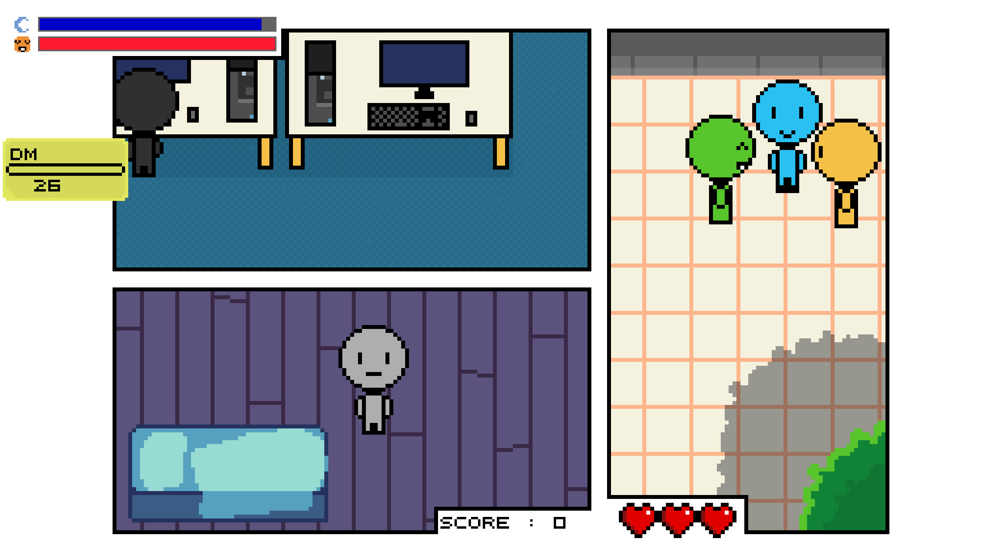

Création d'un jeu vidéo autour du thème "le monde merveilleux de l'iut 2" lors d'une gamejam de 4 jours en python
Le jeu représente la vie palpitante d'un étudiant au sein du BUT informatique dans un style pixel / bande dessinée unique ! Rendez vos devoirs à temps tout en prenant le temps de dormir et d'aller voir vos amis ! essayez de faire le maximum de points en rendant le plus de devoirs possibles tout en gardant un oeil sur vos barres de sommeil et de sociabilité.
Barre de sociablité
barre de sommeil
Gagner des points
GAME OVER
Paramétrage du jeu
Indique votre niveau de sociabilité. Elle descend lorsque que vous faites vos devoirs et remonte quand vous parler à vos amis. Se rapprocher de ses amis déclenche un mini jeu de timing pour gagner des points de sociabilité pour la barre.
descend lorsque que vous êtes évéillé. Vous pouvez la faire remonter en dormant en jouant au mini-jeu déclencher en passant près du lit. Ce mini-jeu consiste à essayer de garder un curseur dans la zone violette foncée de la barre au dessus du lit alors qu'il se déplace tout seul vers la droite. Appuyer avec le bon rythme sur la barre espace permet de ramener le curseur vers la gauche et ainsi de faire remonter la barre de sommeil.
Jouer au mini jeu déclenché en s'approchant du pc permet de gagner des points . Le mini-jeu consiste à taper sur les touches apparaissant à l'écran pour faire avancer la barre de progression des devoirs. Ceux-ci sont affichés à gauche de l'écran sous forme de post-its avec une barre de progression et un temps pour les faire.
Le game over apparaît si la barre de sociabilité ou de sommeil atteint 0 ou après ne pas avoir terminé un devoir pour la troisième fois. Ces 3 chances de rater un devoir sont représentées par les 3 coueurs en bas de l'écran qui disparaissent au fur et à mesure que les devoirs ne sont pas fait.
Le jeu est complétement paramétrable. Il existe une cinquantaine de paramètres influant sur la façon de jouer. Ils peuvent influer sur la vitesse du personnage, la difficulté des mini-jeux ou encore la vitesse d'apparition des devoirs par exemple.
Compétences développées
Travail en collaboration
Développement Python
Travail sous stress intense
Notions de développement de jeu vidéos
J’ai appris à collaborer au sein d’une équipe et à bien segmenter les tâches afin de gagner du temps.
J’ai beaucoup développé mes compétences en Python car j'ai dû acquérir par moi même toutes les compétences utilisées pour faire ce jeu vidéo. De plus, Pygame était totalement nouveau pour moi.
Les temps de rendu ayant été très courts (4 jours pour apprendre pygame et faire un jeu de A à Z sans base de départ) j'ai dû apprendre à coder et à m'organiser sous la pression ce qui m'a permis d'améliorer ma gestion du stress.
J'ai appris beaucoup de notions et de techniques utilisés pour coder un jeu vidéo (comme par exemple la manière d'animer les personnages et les décors avec des sprites-sheets et j'ai ensuite côdé une classe d'animation de sprite sheet)